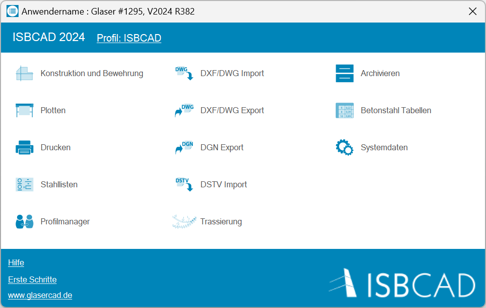
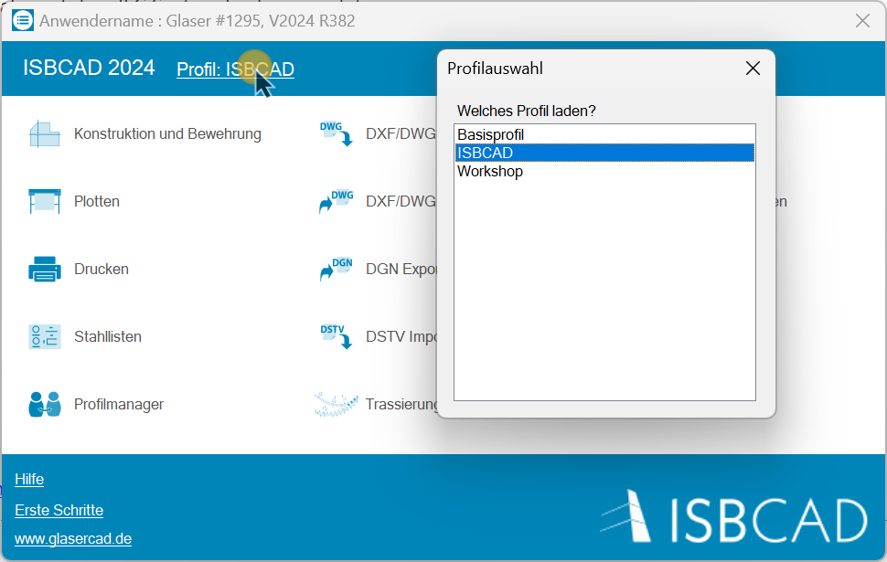

Windows-Startmenü → Programmgruppe ISBCAD 2026 → Hauptmenü.
Im ISBCAD Hauptmenü können Sie die Grundeinstellungen von ISBCAD Ihren Anforderungen entsprechend anpassen. Während einige Programmmodule den im Konstruktions- und Bewehrungsprogramm verwendeten Einstellungsdialogen entsprechen (z. B. das Modul Systemdaten), bieten andere zusätzliche Funktionen und Optionen, die die tägliche Arbeit erleichtern.
 |
Das aktive Profil wird für neue Zeichnungen, Datei-Importe und bei der Datenübergabe mit dem IFC Section Tool verwendet. Profil aktivieren ·Klicken Sie im Hauptmenü den Profilnamen an. ·Klicken Sie im Profilauswahl-Fenster das Profil an, welches aktiviert werden soll. Nach dem Anklicken eines Profils wird das Fenster geschlossen und im Hauptmenü als aktives Profil angezeigt.  Ein Profil kann auch mit der Funktion Profil wechseln aktiviert werden. Mit dem Profilmanager können Sie Profile erstellen und verwalten. |
Programmmodule
Symbol |
Modul |
Beschreibung |
|---|---|---|
Öffnet das Konstruktions- und Bewehrungsprogramm (kurz: ISBCAD). Je nach Installationsumfang stehen die Funktionen des Konstruktionsprogrammes oder, darüber hinaus, die Funktionen des Bewehrungsprogrammes in einer gemeinsamen Oberfläche zur Verfügung. |
||
|
Drucken oder Plotten einer oder mehrerer Zeichnungen. Konfiguration der Druck-/Plot-Ausgabe. |
|
|
Drucken einer oder mehrerer Zeichnungen. Konfiguration der Druck-/Plot-Ausgabe. |
|
Erstellen von Einzel- oder Gesamt-Stahllisten für eine oder mehrere Bewehrungszeichnungen. |
||
Erstellen und Verwalten von Profilen. |
||
|
Umwandeln mehrerer DXF- oder DWG-Dateien in das ISBCAD Format AKT |
|
|
Speichern der aktuellen Datei als AutoCAD-Datei im DXF- oder DWG-Format. |
|
|
Export von ISBCAD Zeichnungsdateien (AKT-Format) in das DGN-Format (MicroStation®). |
|
Import der in externen Stabwerks‑Statik‑Programmen ermittelten Stahlprofile. |
||
Dieses Zusatzprogramm generiert Geraden, Kreisbögen, Klothoiden, Blosskurven, Polynomialen sowie deren Parallelen. Im Konstruktionsprogramm werden Kilometrierungsbezeichnungen inkl. tabellarischer Darstellung ausgegeben. |
||
Entpacken von Archiv-Dateien (*.ARH), die mit ISBCAD oder früheren Versionen erstellt wurden. |
||
Im Bewehrungsprogramm zur Verfügung stehende Rundstähle, Matten und Unterstützungskörbe. Die Tabellen können durch eigene Angaben oder Import aus anderen Quellen ergänzt werden. |
||
Konfiguration des Konstruktions- und Bewehrungsprogrammes. Der Dialog Systemdaten kann auch direkt aus dem Konstruktions- und Bewehrungsprogramm geöffnet werden. [Option | SysDat]. |

.gif)
.png)


.png)
*Lizenz kann separat erworben werden.